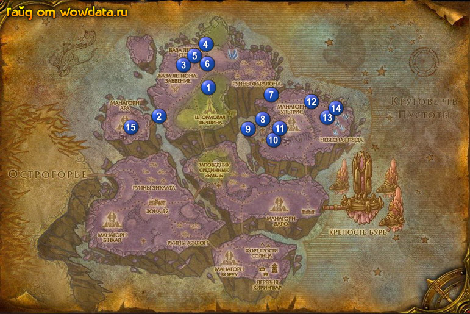

1) То же cамое и с последним квестом на мутировавших плеточников, бьете и самцов, и самочек табулков, затем когда у них остается 20% жизни или меньше, юзаете на них маркер, который вам дали для <Существа Эко-Сфер>. Он не убивает их, а только вырубает их на время, пока они не восстановятся. Возможно оставать на одном пастбище оленей-талбуков, чтобы закончить квест, не убивая их.
2) Как только выполнили это, возвращайтесь к Аурин Лунное Сияние, стоящей рядом с лифтом, сдавайте и берите следующий квест <Когда природа заходит слишком далеко>
3) Идите на северо-восток недалеко от озера, 1 (44,28) и убейте Маркару, большую гидру, потом возвращайтесь к лифту и сдавайте
4) Идите южнее к Лагерь Тулумана 2 (34,38), и подойдите к Кайлаан , закончите <Темный пакт>, и начните <Нет больше Алдора>
5) Идите к Тулуман Торговец Ветром и закончите <Покончить с Подчинителем>, так же рядом с ним <Нейтрализовать чародеев Хаоса>
6) Идите на северо-запад в Кузнечная База: Геенна 3 (39,21) убивайте Вестник Зла для <Наилучшая защита>
7) идите на северо-запад в Заповедник "Дальнее поле" 4 (44,14) к Ташар и закончите <Испытание прототипа> начните <Все чисто!> начните убивать динозавров и собирать [Сегмент генератора защитного купола] для <Сбор деталей> как только закончите возвращайтесь к Ташар 4 (44,14) и закончите <Все чисто!> подождите немного пока он чёто похимичит и начните <Успех!>
8) Бегите назад в Штормовая Вершина к Гхабар и закончите <Успех!> идите к Ловчий Пустоты Наутис и закончите <Наилучшая защита> начните <Телепортируй это!> затем идите к Оди Иголка и закончите <Сбор деталей>
9) Идите в Кузнечная База: Геенна и у каждого телепорта используйте [Жезл Ментального вмешательства] на Хозяин кузни Кибергнева для <Наилучшая защита>. Kоординаты телепортов: западный 3 (39,20), центральный 5 (41,18), восточный 6 (44,20). Бегите в Штормовая Вершина к Ловчий Пустоты Наутис и закончите его
10) Летите в Зона 52 в гостинице найдите Экзарх Орелис и закончите <Нет больше Алдора> затем телепортнитесь обратно в Штормовая Вершина
11) У вас должно быть около 25-30% на 70 лвл
12) бегите на северо-восток через Руины Фаралона через мост к Застава стражей Протектората 7 (58,31) найдите там Марид Торговец ветром и начните <Нескромное предложение> у Ученый Навууд начните <Слава электрошоку!> и рядом с ним у Командир Амир начните <Братство Эфириум> затем у Профессор Дабири начните <Рецепт уничтожения> у Укротитель плоти Виридиус (он ходит там рядом) начните <Капитан Тиралиус>
13) Выпейте [Варево Навууда] и бейте по пустотам Отброс Бездны чтобы разбить их на шары для первой части <Слава электрошоку!> в тех местах, куда вы изначально шли
14) Теперь идите южнее в Полигон Эфириума в 8 (56, 38) и начинайте убийство Капитан Зовакс, бродящего неподялеку для <Братство Эфириум>. Как только сделали, вам нажно заюзать зета-транспортер в 8 (56,38) и появится Проекция командира Амира . Сдавайте квест и берите <Данные Братства Эфириум>, затем сверните немного на запад, 8 (55,39), там будет [Информационная ячейка братства Эфириум] - берите ее и сдайте Проекция командира Амира в портале и берите <Риск поражения мозга – высокий>
15)Теперь из мобов нужно выбить эссенцию. Выпейте ее и на 30 секнуд получите бафф, позволяющий видеть рыбу как реле, плавающие вокруг, которые вам нажно убить, чтобы подменить информацию. Вы сможете получать по 1-2 порции на каждую выпитую essence.
16) Возвращайтесь к Командир Амир к порталу, и берите <С-А-Б-О-Т-А-Ж>, потом убейте пару мобов , пока не получите готовый [Готовая астральная обертка], потом идите обратно к порталу сдавайте, берите следующий <Передать послание> и защищайте подрывника (проще всего либо зачистить сначала, либо пусть треш на него нападает. Мобы на нем повиснут, но дамажить не будут). Возвращайтесь обратно и ПРОПУСТИТЕ следующую часть.
17) Идите немного юго-западнее, там охранник Тюремщик Айкошок, убейте его, возьмите ключ, но не используйте его на камер рядом, они бесполезные. Нужная нам камера позади Соправитель Салхадаар в 9 (53,41), открывайте для <Капитан Тиралиус>
18) идите на восток, 10 (59,45) и поговрите с Посланник Араксис и берите <Усеял мертвыми костями...>, идите в шахту, войдите в Шахта Зеон и юзайте фонарик на иссохших телах. Не подходите близко, иначе они будут спавниться в Паразитирующий мясожор. Когда входите в в туннель, сверните налево, держитесь все время левее, когда дойдете до 11 (60,41), увидите Посланник Иасикс и [Аккумулятор телепортатора]. Берите <Арконус Ненасытный>, и вам дадут гологоамму чтобы собрать паки для <Нескромное предложение>. Потом идите обратно ко входу, и спускайтесь глубже, держитесь правой стороны., пока не войдете в большую комнату в 11 (60,39). Убейте Арконус Ненасытный, потом выходите из пещеры и возвращайтесь к Посланник Араксис, который стоит снаружи и сдавайте <Усеял мертвыми костями...>
19) обойдите вокруг Манагорн Ультрис и выпейте [Варево Навууда] бейте Сочащийся слякоч чтобы они поделились на глобули для другой части квеста <Слава электрошоку!> там же убивайте Нестабильный призрак Бездны и Крикун Бездны для <Рецепт уничтожения>
20) Идите 12 (66,33) вы должны увидеть надпись <Триангуляция: точка первая> завершён, если этого не просисходит используйте [Триангуляционный прибор] и появится метка над тем местом куда вам нужно подойти
21) идите на восток в Небесный Гребень 13 (70,39) вы увидите телепорт, используйте его и появится Проекция торговца ветром Марида закончите <Нескромное предложение> начните <Деловая активность>
22) Теперь идите и убивайте любых драконов в том месте ради квестовой вещи затем сдайте квест у Закутанная фигура сразу за телепортом 13 (70,38) и начните <Формальное представление> пройдите немного севернее 14 (71,35) и вы найдёте Тири сдайте её квест и начните <Многообещающее начало>
23) Ходите вокруг голубых кристалов собирая яйца драконов они лежат прямо на земле затем вернитесь к Тири Тирит и закончите квест, начните <Пустые хлопоты>
24) идите в Застава стражей Протектората 7 (58,31) поговорите с Профессор Дабири и закончите <Рецепт уничтожения>, начните <На крыльях Хаоса> затем найдите Укротитель плоти Виридиус и закончите <Капитан Тиралиус> у Ученый Навууд закончите <Слава электрошоку!> у Ameer закончите <Арконус Ненасытный>
25) Идите к Делец Хаззин закончите <Триангуляция: точка первая> начните <Триангуляция: точка вторая> затем идите к Марид Торговец ветром поговорите с ним потом убейте его для <Пустые хлопоты>. (у него есть 2 стража но они слабые)
26) Поговорите с драконом и он понесёт вас вверх над Колебатели камеры Манагорна Ультрис кидайте бомбы до тех пор пока void conduit не будет уничтожен. как только приземлитесь закончите <На крыльях Хаоса> следующую часть игнорируйте
27) Вернитесь в Небесный Гребень к Тири 14 (71,35) и закончите <Пустые хлопоты> забейте на следующую часть
28) Руной телепортнитесь в Stormspire идите к 15 (28,41), там вы увидите надпись <Триангуляция: точка вторая> завершён
29) Идите к Тулуман Торговец Ветром в Лагерь Тулумана 2 (34,37) и закончите квест,следующую часть пропустите
30) Бегите обратно в Штормовая Вершина
31) Если хотите можете слетать и выучить скилы через шатрах потом направляемся в Бастион Аллерии и бежим на восток ко входу в Долина Призрачной Луны